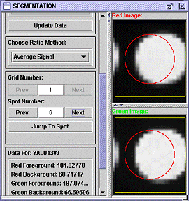

(6) Distinguish signal from background and generate expression file (Segmentation; Control S)

We will break this step into three parts, described in paragraphs (a) - (c).
(a) Select a method for distinguishing signal from background.
| Fixed Circle: The most common way is to simply place a circle in the middle of the squares you drew for gridding. This is called fixed circle, though you can adjust the radius of this circle as shown in the figure to the right. Note that even if the circle is bigger than the box, only signal inside the box is used for measuring signal. |
| Adaptive Circle: The second method to choose from is the adaptive circle. The size and the location of the circle changes, depending of the size on the feature on the microarray. See the instructors guide for more details on this algorithm. |
| Seeded Region Growing: Seeded region growing is designed to find the signal for each spot based on the distribution of the signal. This method for segmentation looks for the brightest pixel near the center of the grid square, and then connects all pixels adjacent to this pixel and connects them into one shape. The algorithm simultaneously connects pixels to background and foreground regions, continuing until all pixels are in one of the regions. A user-specified threshold determines which pixels can be used to "seed" the regions. This is the slowest method since each pixel is processed individually. The bigger the threshold, typically the bigger the spot will be defined. |
|
| (b) Choose a Ratio Method |
|
The final product of segmentation is a list of gene expression ratios. There are four choices for how to combine the four numerical values in segmentation (red foreground, red background, green foreground, green background) to determine a ratio for each feature on the microarray. Total signal adds the values in all the pixels designated as signal, and divides the red total by the green total. Average signal averages the values of signal pixels. The remaining two options subtract the background (total or average, respectively) before dividing the red by the green to get the ratio. Background subtraction introduces the possibility of a negative value (if background is greater than foreground). MAGIC Tool sets a negative value to 0. If background is greater than or equal to foreground in the green signal, this results in dividing by 0. In this case, MAGIC Tool resets the ratio to 998 or 999 (depending on whether the numerator of red foreground minus red background was also 0, or was greater than 0).
You can navigate around the spots, noting the summary of each spot's data below, to visually verify that the gridding and segmentation were performed adequately. This inspection gives you a chance to note any features you think should not be considered during subsequent data analysis.
(c) Automatically Flag Spots (optional)
 Once you have chosen your segmentation method and ratio method, you can set criteria such that if any spot fails to meet the criteria, its ratio will not be included in the expression file. To do so, click on the "Automatic Flagging Options" button. Here, you can enter threshold values for the automatic flagging criteria. When you click OK (even if you leave all the thresholds blank), you will be prompted whether or not to do calculations to find the flagging status of the spots. In the process, MAGIC Tool also computes the average and standard deviation for each of the four data points used in calculations. You can then use this data to refine your automatic flagging criteria. For example, you might wish to flag genes whose total red foreground or total green foreground is less than two standard deviations below the mean.
Once you have chosen your segmentation method and ratio method, you can set criteria such that if any spot fails to meet the criteria, its ratio will not be included in the expression file. To do so, click on the "Automatic Flagging Options" button. Here, you can enter threshold values for the automatic flagging criteria. When you click OK (even if you leave all the thresholds blank), you will be prompted whether or not to do calculations to find the flagging status of the spots. In the process, MAGIC Tool also computes the average and standard deviation for each of the four data points used in calculations. You can then use this data to refine your automatic flagging criteria. For example, you might wish to flag genes whose total red foreground or total green foreground is less than two standard deviations below the mean.
 To see on a grid what spots have been flagged, open the Spot Flagging window from the Addressing/Gridding submenu. All spots that have been automatically flagged will be marked with an orange "X." These flags can only be changed by adjusting the automatic flagging criteria, but you can add or remove manual flags at this stage as well. If a spot is both manually and automatically flagged, a blue "X" will be shown superimposed on the spot instead of the orange "X." If you unflag manually flagged spot that is also automatically flagged, the "X" will turn orange and the spot will remain flagged.
To see on a grid what spots have been flagged, open the Spot Flagging window from the Addressing/Gridding submenu. All spots that have been automatically flagged will be marked with an orange "X." These flags can only be changed by adjusting the automatic flagging criteria, but you can add or remove manual flags at this stage as well. If a spot is both manually and automatically flagged, a blue "X" will be shown superimposed on the spot instead of the orange "X." If you unflag manually flagged spot that is also automatically flagged, the "X" will turn orange and the spot will remain flagged.
If you adjust the automatic flagging options, you must recalculate the data to have the revised automatic flags appear on the Spot Flagging display. When you’ve finished adjusting the options to your satisfaction, continue to generate the expression file.
(d) Generate expression file
Click on "Create Expression File" when you are satisfied with the segmentation process. This will generate an expression file, which was the goal of all the previous steps. An expression file contains the ratios for each spot (red ÷ green), according to the method chosen. MAGIC will ignore certain entries in the gene name column ("blank", "EMPTY", "missing" and "none"; case insensitive). The ratios will be used for all subsequent data analysis. You do not need the tiff files any more.
Unless you have already created an expression file for this microarray, you should check the box next to "Create Expression File?", and name the expression file and the column (e.g. time point, treatment, etc.). You can append this column to an existing file or create a new expression file consisting of this column only. MAGIC Tool will never erase one of your files, so if you append this column to an existing expression file, that file will remain as it was on your computer, and a new file will be created with the current column appended to the right of the columns in the existing file.
In the Expression File Parameters dialog box, you can also choose whether to save the "raw" data that was used to compute the expression ratios. If you check the box next to "Create Raw Data File," a tab-delimited text file will be created that contains 9 columns. The first column is the gene name. The next four columns are the pixel totals for red foreground, red background, green foreground, and green background. The final four columns are the pixel averages for these same four values. The raw data file will have the same name as your column label, with the extension ".raw". Your computer may think this is an image file, but it is just text. You can open the raw file from inside Excel (you may have to force it to look at files of all types for it to open). In future versions of MAGIC Tool, you will be able to use the raw data to filter your expression data, for example when signals are too weak to be reliable. In the meantime, this type of filtering must be done outside of MAGIC Tool.